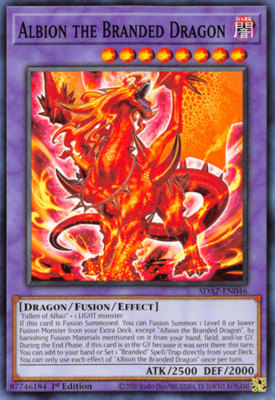
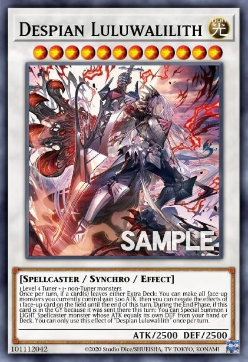
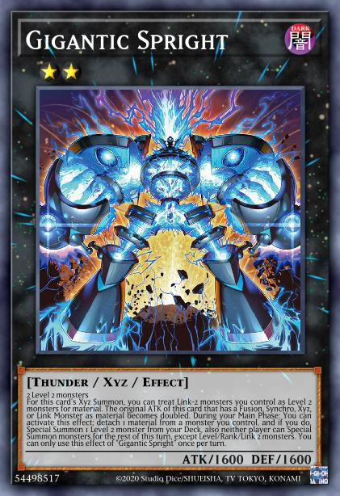
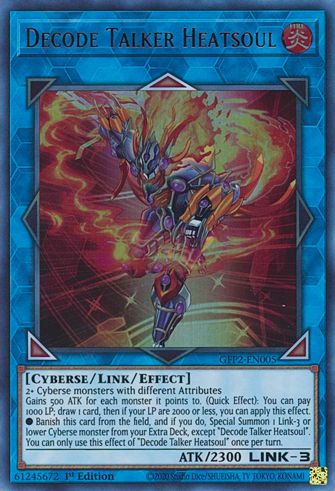
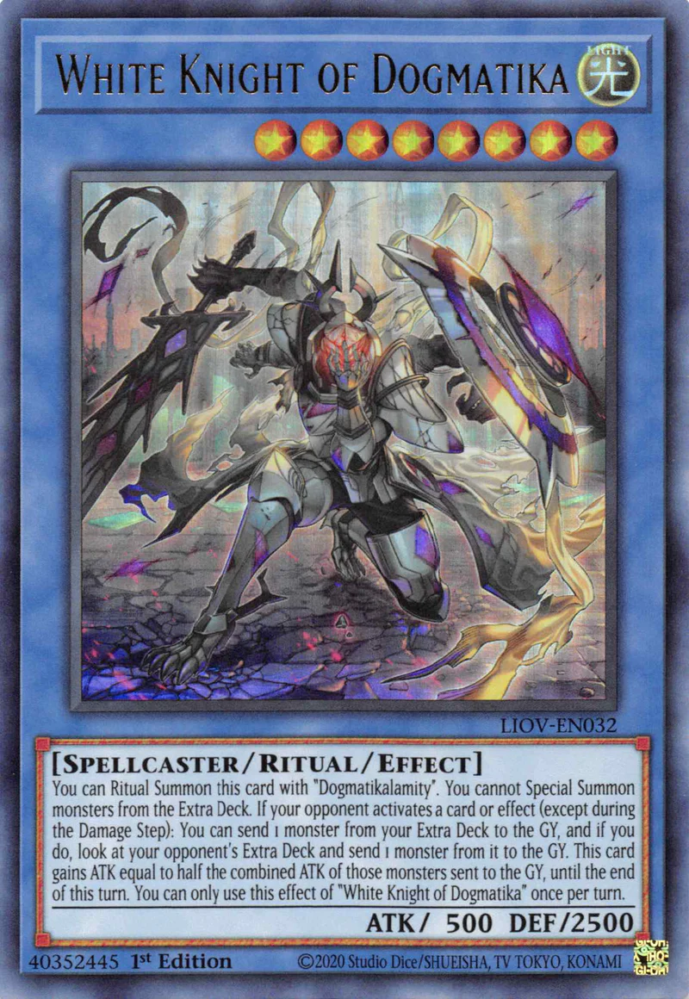

Cartas de Yugioh y sus tipos de invocacion
Monstruos de efecto

Los monstruos de efecto son los mosntruos mas comunes de YuGiOh, esto pueden ser invocados de forma normal desde la mano, o de forma especial por efecto de una carta o de ellos mismos.
Monstruos de Fusion
Los monstruos de fusion se invocan de forma especial mediante del uso de cartas magicas "Fusion" o por lo que se conoce como "Fusion de Contacto" sin el uso de cartas magicas , aunque ambos se resuelven de la misma forma, sacrificando los monstruos materiales para la fusion.
Monstruos de Sincronia
Los monstruos de Sincronia se invocan sacrificando el numero de monstruos requeridos por cada monstruo, en los que uno de ellos siempre tiene que ser un Tuner, y cuyos niveles sumados equivalgan al nivel del monstruo de sincronia que se quiera invocar.
Monstruos XyZ
Los monstruos XyZ se invocan colocando dos o mas monstruos del mismo nivel uno encima del otro y luego encima de estos el monstruo XyZ.El numero de materiales debajo de estos monstruos equivalen al numero de veces que sus efectos pueden activarse, como las balas de un cargador.
Monstruos Link
Los monstruos link se invocan enviando al cementerio los materiales que se requieran desde el campo, no requiere Tuners, ni cartas magicas Ademas de esto, el numero de Link que tienen abajo a la derecha es el numero de materiales necesarios para realizarlo, pero al usar un monstruo link como material de otro monstruo link se puede contar su Numero Link como numero de materiales en vez de contar como un solo material.
Ritual Monsters
Los monstruos de ritual requieren siempre una carta magica de ritual para ser invocados, y ademas de esto, sacrificar un numero de monstruos cuyos niveles totales equivalgan al del monstruo que quiera ser invocado por ritual.